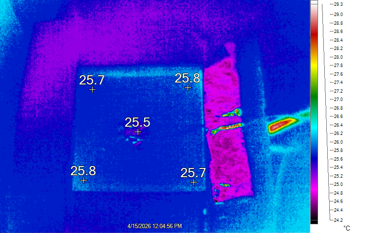
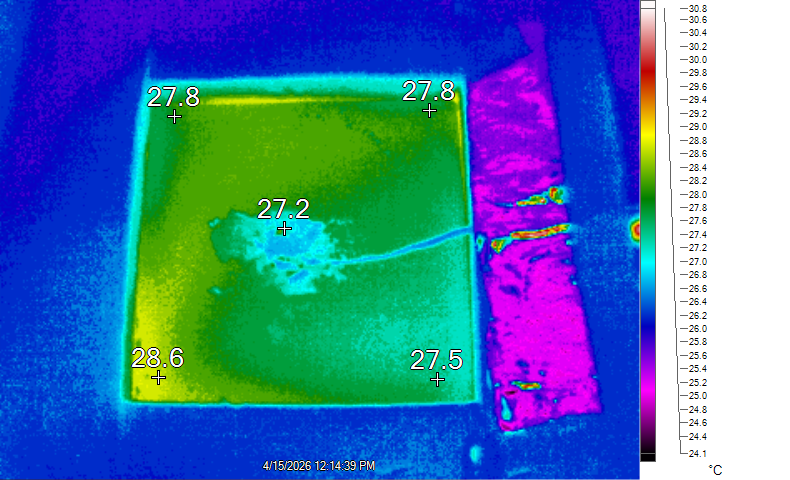
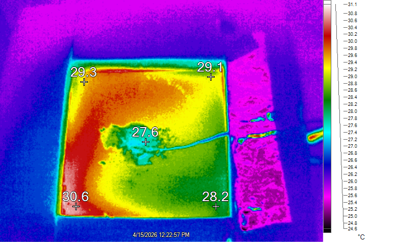
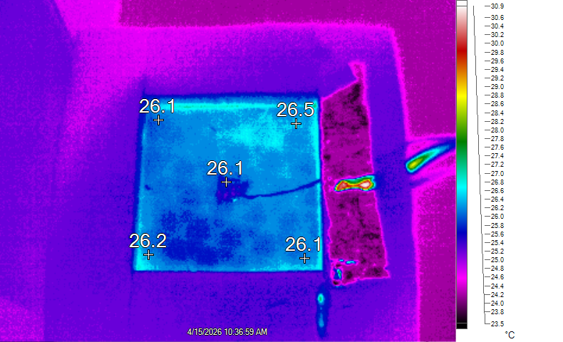
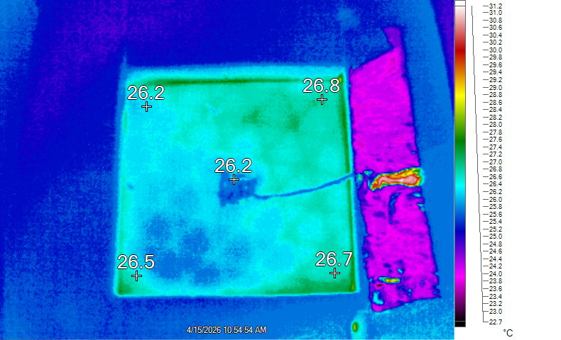
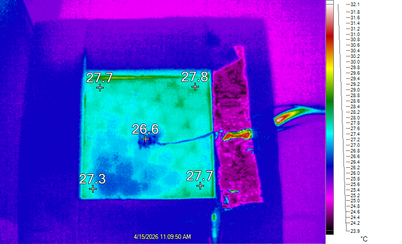
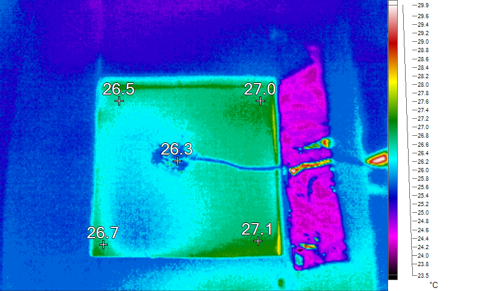
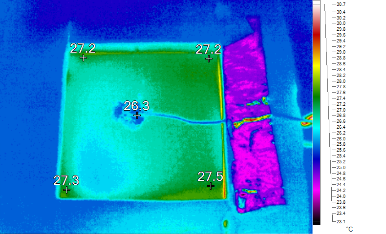
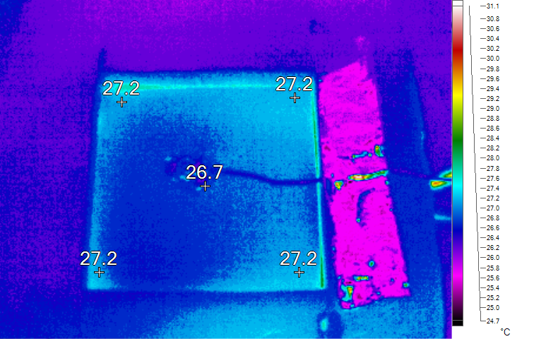

Infill and Thermal Conduction
Supporting files
Additional photos, video recordings, requirements, and project notes. The main case study presents the selected results; these files provide further context and design history.
Each file can be opened or downloaded individually. Expand a category to browse individual files. HEIC images may require downloading to view.
Data (21)
data/100.xls · 0.07 MB · Download
data/100_61.IS2 · 0.50 MB · Download

data/100_61.png · 0.25 MB · Download
data/100_74.IS2 · 0.48 MB · Download

data/100_74.png · 0.31 MB · Download
data/100_81.IS2 · 0.46 MB · Download

data/100_81.png · 0.33 MB · Download
data/15.xls · 0.13 MB · Download
data/15_61.IS2 · 0.50 MB · Download

data/15_61.png · 0.27 MB · Download
data/15_74.IS2 · 0.50 MB · Download

data/15_74.png · 0.31 MB · Download
data/15_81.IS2 · 0.52 MB · Download

data/15_81.png · 0.30 MB · Download
data/50.xls · 0.08 MB · Download
data/50_61.IS2 · 0.57 MB · Download

data/50_61.png · 0.30 MB · Download
data/50_74.IS2 · 0.50 MB · Download

data/50_74.png · 0.29 MB · Download
data/50_81.IS2 · 0.53 MB · Download

data/50_81.png · 0.28 MB · Download


Notes (1)
Read text
# Infill and Thermal Conduction ## Purpose Investigate how 15%, 50%, and 100% cubic infill affect the equivalent thermal conductivity and resistance of otherwise comparable PETG blocks. ## Requirements and constraints - Hold block geometry, material, wall thickness, and layer height consistent while varying infill. - Approximate one-dimensional, steady-state heat transfer with insulated side walls and controlled top-surface airflow. - Measure heater power and surface temperatures despite instrument noise and uncertainty. - Distinguish conduction from heat leakage, internal air effects, and temperature-dependent material behavior. ## Engineering contribution I led concept development and coordinated the team’s work on this self-chosen project. Together, we designed the experiment around three 2 × 2 × 1 inch FDM-printed PETG blocks, a patch heater, an insulated enclosure, and forced convection over the top surface. Thermocouples, heater-power measurements, and infrared imaging supported the analysis of equivalent thermal conductivity and resistance. ## Outcome and limits The team completed the experimental design, testing, analysis, and final report. Results were inconclusive because of unreliable equipment and limitations in the experimental assumptions. The report identifies wattmeter uncertainty, thermocouple noise, heat leakage, nonuniform surface temperatures, and operation near PETG’s glass-transition range as limitations. It proposes better instrumentation, improved insulation, and a control test for a future iteration. ## Numerical qualification The original report lists thermal resistance 0.147 K m^2/W and conductivity 1.35 W/(m K) for the 15% specimen at 81 C. Using its stated thickness of 0.0254 m, k = L/R would instead require approximately 0.0188 K m^2/W. The original PDF and unverified presentation were removed; no corrected measurement is asserted. Retained raw measurements and specimen CAD support further review.
project-notes.md · 0.00 MB · Download